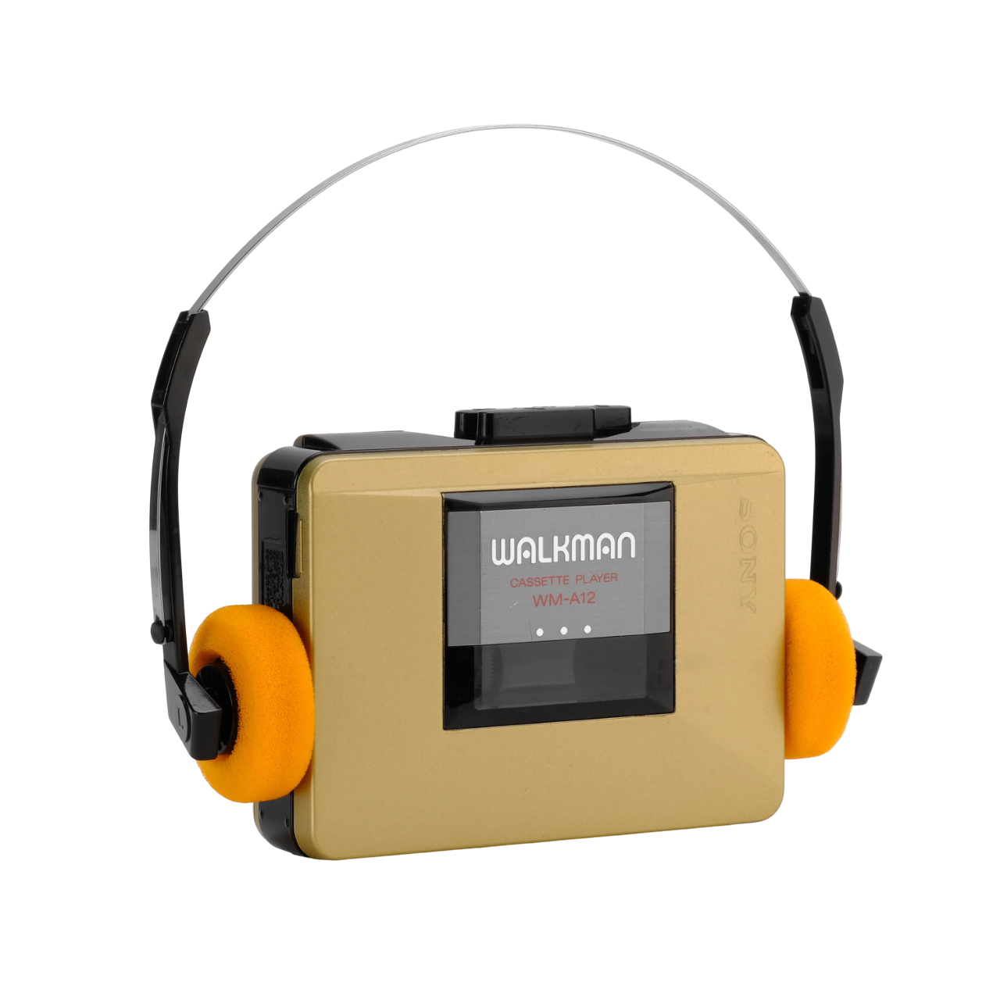

Our catalog
Sony Walkman WM-2011

Experience the charm of retro audio with the Sony Walkman WM-2011, a compact and stylish cassette player from the late '80s.
$59.99 CAD
Sony Walkman WM-a12
Step back into the golden era of portable audio with the Sony Walkman WM-A12, a beautifully engineered cassette player introduced around 1986.
$79.99 CAD
Sony Walkman WM-f2015

The Sony Walkman WM-F2015 is a vintage portable cassette player with a built-in AM/FM radio, offering classic analog sound and radio tuning on the go.
$99.99 CAD
Find your shop
| Name of the Shop | Location | Hours of Operation |
|---|---|---|
| Walkman Central | 123 Queen St W, Toronto, ON M5H 2M9 | Mon–Fri: 10am–6pm |
| Analog Revival | 456 Bloor St W, Toronto, ON M5S 1X8 | Tue–Sat: 11am–7pm |
| Urban Mixtape | 88 Spadina Ave, Toronto, ON M5V 2J4 | Mon–Sat: 12pm–8pm |
| Loop & Track | 25 Peel Centre Dr, Brampton, ON L6T 3R5 | Tue–Sun: 10am–9pm |
| Magnetic Beats | 100 City Centre Dr, Mississauga, ON L5B 2C9 | Sat–Thu: 11am–8pm |
| RetroSound Hub | 1500 Rue Sainte-Catherine O, Montreal, QC H3G 1S8 | Tue–Sat: 11am–7pm |
| Rewind Records | 5400 Jean-Talon St E, Montreal, QC H1S 1K3 | Wed–Sun: 10am–6pm |
| Cassette Culture | 5000 Hwy 7, Markham, ON L3R 4M9 | Mon–Sat: 10am–5pm |
| Classic Tunes | 321 Elgin St, Ottawa, ON K2P 1M5 | Mon–Fri: 10am–5pm |
| Mixtape Market | 10125 107 St NW, Edmonton, AB T5J 3N4 | Mon–Fri: 9am–6pm |
| Walkman West | 501 Kingsway, Vancouver, BC V5T 3J1 | Tue–Sat: 10am–6pm |
| Vintage Vibes | 810 Granville St, Vancouver, BC V6Z 1K3 | Mon–Sun: 9am–9pm |
| Reel Revival | 2271 Harvey Ave, Kelowna, BC V1Y 6H2 | Wed–Sun: 11am–7pm |
| Sound Sanctuary | 780 Fort St, Victoria, BC V8W 1H2 | Tue–Sat: 10am–6pm |
| Time Capsule Audio | 500 Portage Ave, Winnipeg, MB R3C 3X1 | Tue–Sat: 10am–6pm |
| HiFi Rewind | 3100 Howard Ave, Windsor, ON N8X 3Y8 | Mon–Fri: 9am–5pm |
| Tape Deck Lounge | 230 8 St E, Saskatoon, SK S7H 0R5 | Tue–Sat: 12pm–9pm |
| Old School Sound | 1875 Hollis St, Halifax, NS B3J 1W5 | Mon–Sat: 11am–7pm |
| Portable Sound Co. | 44 Côte du Palais, Quebec City, QC G1R 4H8 | Tue–Sat: 10am–6pm |
| Waveform Audio | 920 St-Joseph Blvd, Gatineau, QC J8Z 1S9 | Wed–Sun: 11am–6pm |